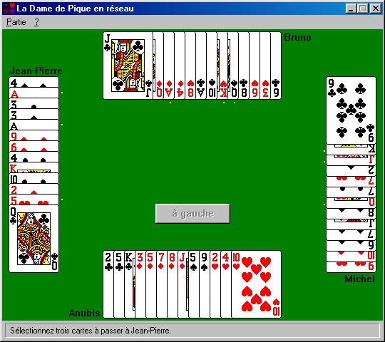
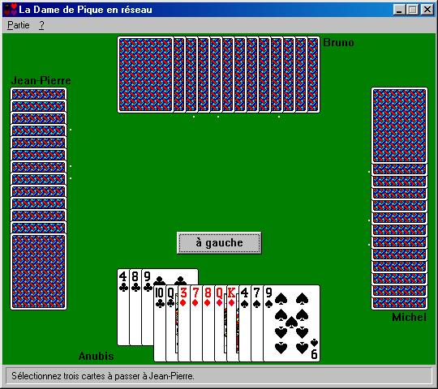
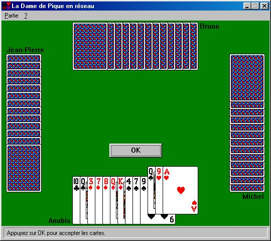
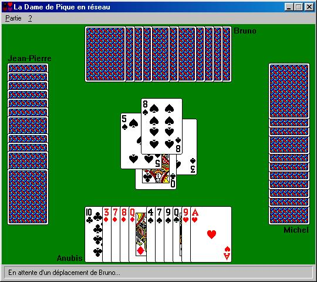
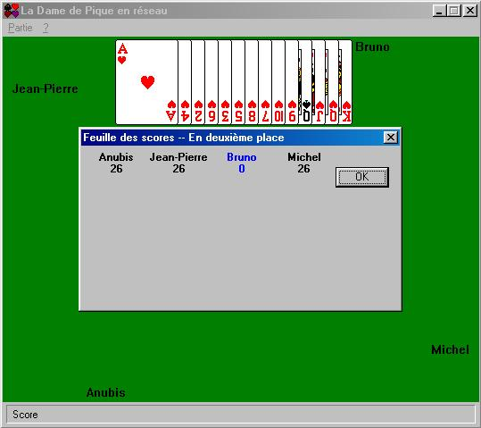
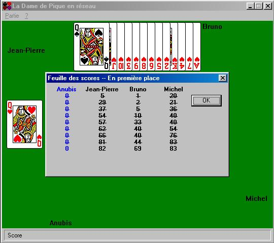
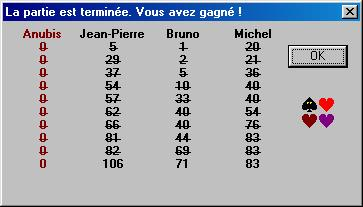

On continue dans la série "Comment toujours gagner à ..." (prochain tut sur "Comment toujours gagner au millionnaire chez Foucault?" :o) ) avec ce jeu de Kro$oft qui m'énerve au plus haut point: cette #@§!?&~##! de Dame de Pique (sous Win 98). Hein?! Non je n'ai pas dis de gros mots...!
Un peu comme la belote ou la bataille, il s'agit surtout de ne se ramasser aucun coeur (valant chacun 1 point) et encore moins la dame de pique (qui vaut 13 points). Il faut également faire attention à ce qu'un joueur ne ramasse pas tous les coeurs ET la dame de pique, sinon il inflige 26 points à tout le monde. Le gagnant étant celui qui a le MOINS de points à l'issu du jeu. Le jeu se termine lorsqu'un des joueurs atteint misérablement 100 points. Une partie commence en jouant le 2 de trèfle.
L'astuce bien connue de ceux qui jouent à ce jeu est de modifier dans la BdR la branche HKEY_CURRENT_USER\Software\Microsoft\Windows\CurrentVersion\Applets\Hearts en y ajoutant la clé zb avec la valeur 42 et de taper Ctrl+Shift+Alt+F12. Ceci fait apparaître les cartes des joueurs qui sont cachées. Au passage vous trouvez le raccourcis dans les Accelerators sous un éditeur de ressources (F12,121,VIRTKEY,SHIFT,CONTROL,ALT). Reste plus qu'à décrypter le source en recherchant le passage sous Wdasm avec le code (en hexa!!) du message (donc 121d=79h).

En principe, j'aime bien les jeux de cartes (réussites, belote, poker...). Hihi, ça me fait penser à mon ancien prof d'info à qui j'avais demandé pourquoi les jeux de zindoz n'étaient pas installés sur les bécanes. Il m'a répondu "je ne les ai même pas installé chez moi!" avec un regard sévère genre dieu le père et en pensant "petit imbécile va!". Et bien je profite de ce tut pour lui répondre qu'il n'est qu'un ignare qui ne cherche même pas à regarder plus loin que le bout de son nez (cf ce tut!) et qui en plus de son ignorance se permet de faire la morale aux autres. Allez va, sans rancune le vieux, car sinon je serai devenu comme toi depuis le temps...
Donc, j'aime bien les jeux de cartes, mais pour ce jeux - à priori sympa - le programme TRICHE! Et ça, ça me met hors de moi. Et quand on triche avec un reverser, la vengeance est terrible!!! :o)
Comment le jeu triche? Après avoir fait de nombreuses parties, on se rend compte assez vite qu'on ne joue pas à 4, chacun pour soi; mais qu'on joue à 4, seul contre l'ordi qui fait exprès perdre un des 3 joueurs qu'il administre pour mieux faire gagner un autre face à vous. En gros, de 2 jeux moyens, il en fait un pourri et un excellent contre lequel vous n'avez quasi aucune chance.
Ca m'a tellement foutu en rogne, que j'ai plusieurs fois viré ce jeu de l'ordi. Jusqu'au jour où je me suis dis que je devais lui mettre une rouste!
Pour pallier à la triche du jeu, on doit changer une voire deux instructions (deux étant plus confortable) :
Ces deux instructions sont pilotées par un vulgaire jump qu'il suffit de nopper pour en être débarrassé. Je tiens tout de suite à faire un commentaire ici: ceci est NUL à faire au niveau cracking. Ca ne demande aucune connaissance et ça prend 2 secondes à changer (cf les propos de Smeita dans le Memento 1 ou 2 quand on débute en cracking ;o) ). L'intérêt de ce tut est d'illustrer le fait de se servir de techniques de cracking pour imposer sa vision des choses dans un endroit où il n'y a rien à craquer! Un peu à la matrix en quelque sorte... Pour ceux qui n'ont rien compris, le cracking ne sert pas qu'à craquer. Il sert aussi à d'autres choses, cf la vision ringarde de mon CHER vioc de prof d'info...
Voici maintenant les changements à faire. Vu leurs simplicités, je ne fais pas de capture d'écran.
Sous Wdasm, on repère "Vous devez choisir une carte de la même couleur" dans les StringDataRefs. En double cliquant dessus, on ne trouve qu'une occurrence dans le listing à la ligne 11672. En remontant le listing, on voit que cette branche de code est gérée par un saut en 0001.4FE9 qui est à l'offset 5609h
0F84AB00 je 5098
que l'on noppe sous l'éditeur hexa. Nous voilà débarrassé de la 1ère contrainte !
Même technique avec la phrase "Les coeurs n'ont pas encore été joué. Choisissez une carte d'une autre couleur". On atterri à la ligne 11827 qui nous renvoie au saut en 0001.5188 qui est à l'offset 57A8h
7515 jne 519F
que l'on noppe également. Voilà pour le 2ème changement.
On commence par passer 3 cartes. Vu nos petits changements ;o) on peut se permettre de passer les 3 premières sans calculer une certaine tactique !

Il nous refile 3 cartes aussi, que l'on accepte :

Ensuite lors de la partie, on peut enfin goûter au délice de "jouer comme on a envie". Dans l'image ci-dessous, on passe une dame de trèfle alors que pique est demandé et qu'on en a encore !

Il y a cependant encore un point auquel il faut faire attention et qui peut nous faire perdre. Si un joueur parvient à avoir TOUS les coeurs ET la dame de pique, alors il inflige 26 points aux autres et ne prend pas de points (image ci-dessous).

Il faut donc être "vigilant" et passer au moins un coeur à un joueur et au moins un autre coeur à un autre joueur, de telle sorte que l'image ci-dessus ne se produise pas (image ci-dessous).

Et au final, si vous surveillez bien ce point, on arrive assez facilement à ceci :

Le jeu s'arrête dès qu'un joueur a franchi 100 points.
Il y a ainsi et en tout 4 options que l'on peut modifier pour "augmenter nos chances de gagner" :
Pour que la jouabilité ne souffre pas trop, je conseille de neutraliser les options 2 et 3. Mais rien n'empêche de modifier le jeu comme on veut. Dans cette optique voici le source + .exe (en VB6) patcheur.zip d'un petit patcheur.
Les changements à faire sont :
Option Offset RVA Code origine Code patché 1 - 575Eh 1.513E 7456 9090 2 - 5609h 1.4FE9 0F84AB00 90909090 3 - 57A8h 1.5188 7515 9090 4 - 5693h 1.5073 7503 9090
Pour l'option 4, il y a deux occurrences dans les stringdatarefs. C'est la deuxième qu'il faut patcher, la première ne marche pas. Une touche "RAZ" (remise à zéro) est aussi présente dans le patcheur, au cas où on veut annuler les modifications faites. De même, vous trouverez également l'astuce Bdr citée en début de ce tut.